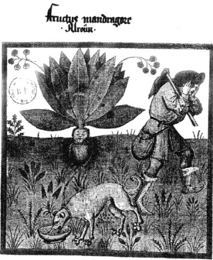

ŞEKİL 5. Benzer bir sahnede, adamotu kökü topraktan sökülürken kulakların tıkanması
(bir Tacuinum sanitatis nüshasından).30
Eresos’lu Theophrastos (“Tyrtamos”) (İÖ 372-287) Aristoteles’in öğrencisi olup adamotu kökünün topraktan çıkarılmasında kılıçla kesmeyi önerirken, Yahudi tarihçi Flavius Josephus (37-~95), bir köpeğin kurban edilmesini salık verir. Hıristiyan Batı’da erken zamanlarda mandragora motifinin dinbilimsel yorumları da yapılmıştır. İS 3. yüzyıldan, Hıristiyanlığa ilişkin alegorik hayvan masalları derlemesi olan Physiologus (Doğa Araştırıcısı) adlı eserde bir fil çiftinden söz edilir. Bunlar çiftleşmek isterler ve Cennet’in yakınında yetişen adamotu ağacına doğru yönelirler. Dişi fil, adamotunun meyvesini yediğinde cinsel olarak uyarılır ve aynı meyveden erkek file verir, o da uyarılır; başarılı bir çiftleşmenin önünde bir engel kalmaz. Bu masalda adamotu bitkisinin adamotu ağacına dönüşmüş olması, ön planda onun bir aşk aracı olarak kullanılması ve arka planda da Musa’nın Eski Ahit’indeki “İyilik ve Kötülük Verici Bilgi Ağacı”nın yasak meyvesi ile ilintilidir ve Âdem ve Havva’nın Cennet’ten kovulması öyküsü kesin olarak Yahudi kökenlidir. Mandragora kökünün narkotik ve ağrı dindirici özellikleri, içeriğindeki “hyoscyamin” ve “atropin” alkaloitlerine dayanır. “Hyoscyamin” etken maddesi, günümüzde kasılma önleyici, gözbebeklerini büyütücü ve Parkinson hastalığına karşı kullanılmaktadır.29
Adamotunun insanları görünmez kıldığına, fakiri zengin yaptığına, gönül işlerinde şans getirdiğine ve tüm hastalıkları iyileştirdiğine de inanılırdı. Adamotu kökü, topraktan sökülürken o denli güçlü bir çığlık atardı ki, onu duyanlar korkudan ölürdü; bu nedenle kulaklara balmumu tıkamalı ve kök, bir Cuma günü sabahı kara bir köpeğin boynuna bağlandıktan sonra köpeğe uzatılan bir et parçası yardımıyla köpek çağrılarak topraktan çıkartılmalıydı. Bu boşinançlar 17. yüzyıla dek sürmüştür.
Adamotunun erkeği (“Mandragora mas”) ve dişisi (“Mandragora foemina”) ayırt ediliyordu. Bunlardan eril olanı daha güçlü bir etkiye sahipti, sağlığın yanı sıra şans, zenginlik, aşk ve cinsel kudret verici olarak kullanıyordu ve daha pahalı idi; Alplerin kuzeyinde bir zamanlar yüksek fiyata alıcı buluyordu; “Ailenin koruyucu ruhu” (“Spiritus familiaris”) diye adlandırılıyor ve özenle küçük bir kutuya ya da kapalı bir şişe içine konarak giysi içinde taşınıyor ve hattâ onunla birlikte banyo ediliyordu (ŞEKİL 6).31